> Wudu is a physical and spiritual act to purify oneself before starting prayer. This
purification
ritual is a mandatory step which involves washing of the hands, mouth, nostrils, face, arms, head
and
feet.
The steps must be completed in the given order without long pauses in between each
step.
In the
Sahih hadith of Sunan Abu Dawud, it was reported that the Messenger of Allah (ﷺ) said:
“The prayer of a person who does not perform ablution is not valid” thus making it a necessary act
before you begin your prayer.
Learn “How to Pray Namaz” in perfect way. The Prayer
(Namaz/Salat) is the best worship of Allah. The Muslims around the world pray Namaz five times a
day. This is a reward on the Muslims by Allah. Prayer is one of the five pillars of Islam. Namaz,
Prayer or Salat, is the most important part of the Islam. Learning how to pray Namaz is an
important step in the religious observance of a Muslim. Understand the importance associated with
Namaz, the schedule which should be observed in regards to the prayer, and appropriate positions in
which to perform Namaz so you can participate in the prayer.
It is mandatory for all Muslims to put forth attempt for understanding the implications of
recitation words in Namaz as it will assist us with concentrating much better for getting benefits
impeccably like we see Allah before us or he sees us remaining before him in light of the fact that
during Salaat, Muslims meet their God 5 times each day so in the event that we comprehend what we
are stating in Namaz, it will empower us to feel considerably more modest and converse with the
Master of Universe in modesty.
1. Fajr Prayer (Nimaz):
The time starts at dawn and remains effective slightly before sun rise Two Rakats Sunnat, Two
Rakats Farz
2. Dhuhr Prayer (Nimaz):
The time begins when sun starts
tilting towards west and the shadow of an object becomes equal to the size of the object. It
remains effective half an hour before start of time of Salat Asr.
Four Rakats Sunnat, Four Rakats Farz, Two Rakats Sunnat, Two Rakats Nafil.
3. Asar Prayer (Nimaz):
The time starts when the sun declines and the shadow of an object becomes double the size of the
object. It remains effective till few minutes before the sunset.
Four Rakats Farz
4. Maghrib Prayer (Nimaz):
It is recited just after sunset and
the time remains effective till the afterglow remains visible in the west (twilight). (The
afterglow is visible approximately 1 hour 15 minutes from the time of the sunset). But it would be
much better to recite the Salat just after sun set. Three Rakats Farz, Two Rakats Sunnat, Two
Rakats Nafil
5. Isha Prayer (Nimaz):
The time starts when the afterglow in
the west vanishes (end of twilight which is approximately 1 hour 15 minutes after the sunset ) It
remains effective upto approximately three hours before sunrise. But it is advisable to recite it
before 2/3 of the night passes away.
Four Rakats Farz, Two Rakats Sunnat, Two Rakats Nafil,
Three Rakats Wajib Witr, Two Rakats Nafil
Note : Nafil Namaz (Salah) is offer to thanks our Allah for every thing.
 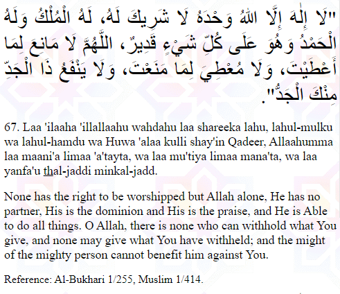
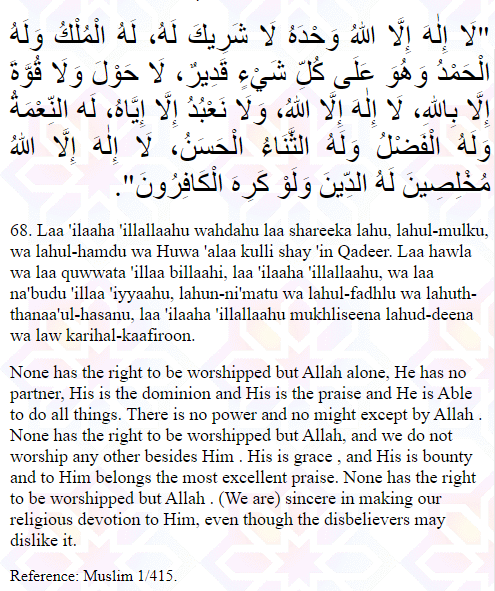
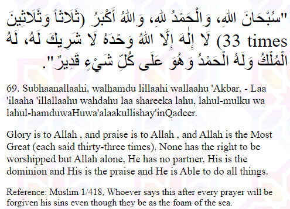
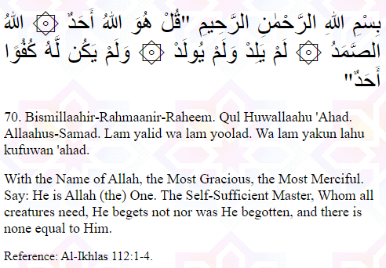
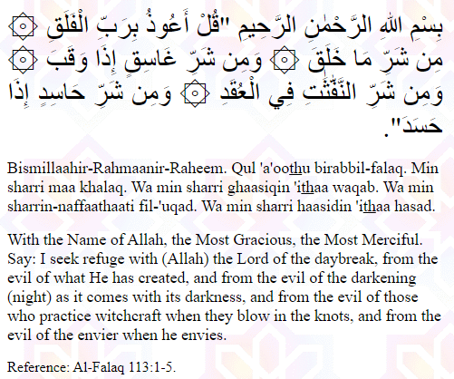
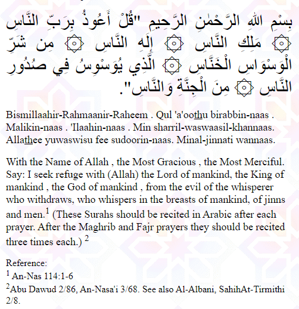
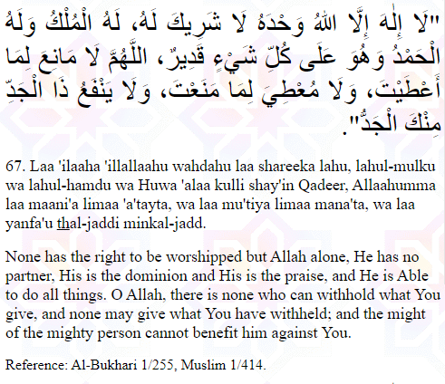
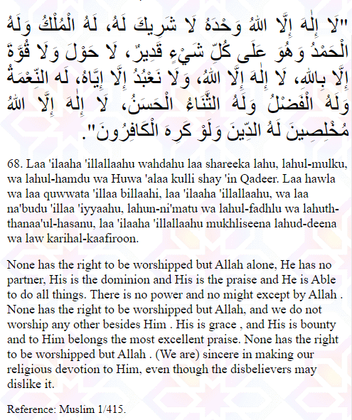
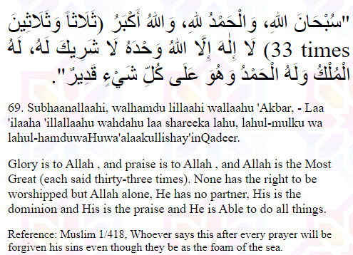
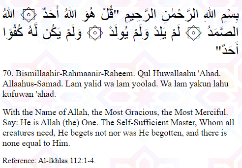
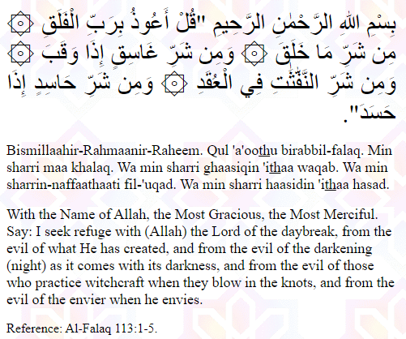
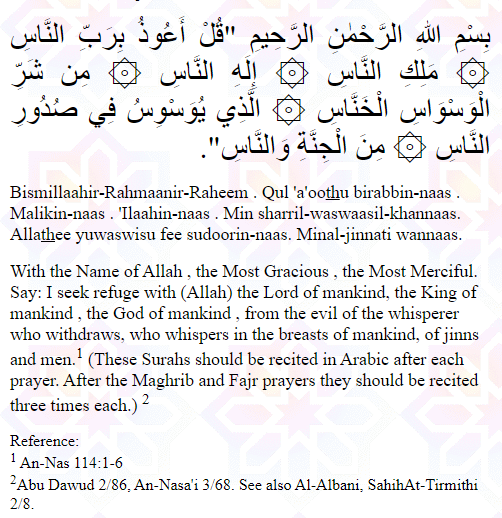
 demo@gmail.com
demo@gmail.com